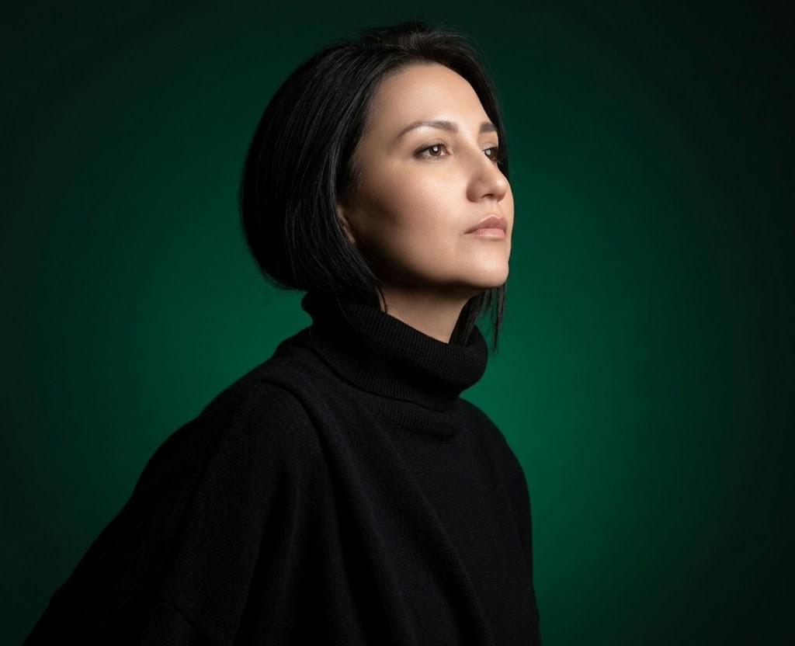
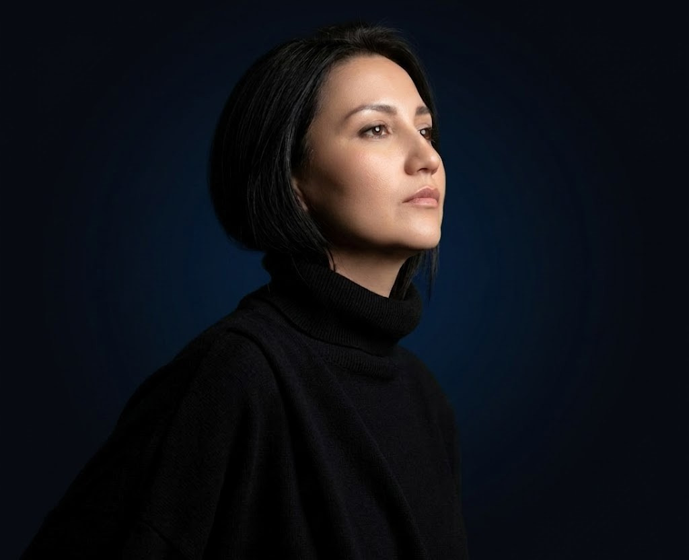

Ведическая астрология · Джйотиш
Помогаю понять ваш период, выборы и предназначение через ведическую карту
Бесплатно · Джйотиш
Узнайте свой ведический знак Луны (Чандра) с накшатрой и знак Солнца (Сурья) — по сидерическому зодиаку, аянамша Лахири. Расчёт мгновенный и происходит прямо в браузере: данные рождения никуда не отправляются.
Лагну (асцендент) можно определить только по выверенному времени и месту рождения — её я рассчитываю индивидуально на консультации.
Это лишь верхушка айсберга. Полный ведический разбор — Лагна, дома, даши и транзиты — раскрывает характер, отношения, предназначение и сильные периоды года.
Записаться на полный разбор

Обо мне
Я практикую ведическую астрологию — джйотиш. Это система не про приговор, а про ритм вашей жизни. Звёзды не управляют нами — они подсказывают. Моя задача — перевести этот язык на понятный, тёплый и применимый.
В работе опираюсь на Даши, транзиты и Варшапхалу. Помогаю увидеть текущий период, сильные стороны и благоприятное время для важных шагов — спокойно, по делу и без сложных терминов.
Консультации
Мини-разбор текущего периода по Дашам и транзитам: почему такое состояние, что его запускает и когда станет легче. С рекомендациями по проживанию.
Помесячная карта года (Вимшоттари Даша, транзиты, Варшапхала): периоды роста и напряжения, что начинать и что отложить.
Сильные стороны, подходящие сферы и стиль работы. Найм или своё дело, где ваши деньги и как выйти на новый уровень.
Глубоко по одной теме: отношения, финансы, здоровье, дети, переезд, работа. Текущий период, прогноз и благоприятные даты.
Характер, таланты и потребности ребёнка, как он лучше учится и как выстроить с ним тёплые, гармоничные отношения.
Переезд, работа, отношения, крупные траты. Смотрим карту, текущие периоды и транзиты — и обретаем уверенность в выборе.
Процесс
Выбираете консультацию и вносите предоплату 100% — это и есть запись.
Присылаете дату, время (±15 минут) и место рождения. Не знаете точное время — поможем уточнить.
Рассчитываю вашу карту — Даши, транзиты, Варшапхала — и готовлю разбор именно под ваш запрос.
Получаете результат в нужном формате: PDF и аудио или онлайн-встреча. Сроки указаны в описании услуги.
Отзывы
Консультация превзошла все ожидания! Спрашивала про финансы, работу и предназначение — ответы развёрнутые, и подтвердилось, что дело действительно моё. Разобрали характер и кармические задачи. Ответы найдены, траектория пути видна!
Консультацию получила в феврале — всё, о чём говорила Римма, сбылось с поразительной точностью. Особенно помогли её указания, где важно не ошибиться: благодаря советам я вовремя сориентировалась и избежала сложных ситуаций. Настоящий профессионал!
Встречались онлайн — я живу в другом городе. Обязательно приеду на очную встречу: Римма просто крутая!
Запись
Заполните форму — свяжусь в течение 24 часов для подтверждения.